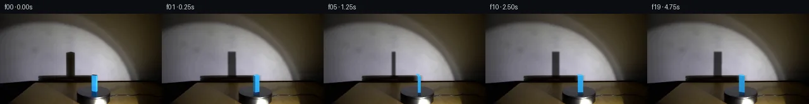

![首帧]()

Round 00
2026-11-05T00:19:32.564754+00:00像素候选变化代码 +272/−0inspection 更新
pixels c93d9a608751e641 · code 9920b826c23ece02
查看本轮 generate.py 真实 diff
--- previous/generate.py
+++ current/generate.py
@@ -0,0 +1,272 @@
+#!/usr/bin/env python3
+"""Generate a locked-camera 20-frame turntable continuation from first_frame.png.
+
+The method is deliberately local and deterministic: source-pixel interpolation removes
+the photographed block and its wall shadow, then analytic cuboid projection, a glossy
+reflection, and a soft projected shadow are composited back over the photograph.
+"""
+
+from pathlib import Path
+import math
+
+import numpy as np
+from PIL import Image, ImageDraw, ImageFilter, ImageFont
+
+from artifact_io import save
+
+
+ROOT = Path(__file__).resolve().parent
+W, H = 256, 144
+SCALE = 4
+
+
+def clean_horizontal_region(a, x0, x1, y0, y1, shoulder=3):
+ """Replace a rectangle by row-wise interpolation between clean shoulders."""
+ out = a.copy().astype(np.float32)
+ for y in range(y0, y1):
+ left = np.median(a[y, x0 - shoulder:x0], axis=0).astype(np.float32)
+ right = np.median(a[y, x1:x1 + shoulder], axis=0).astype(np.float32)
+ # Anchor at shoulder centers, so the illumination gradient crosses smoothly.
+ for x in range(x0, x1):
+ u = (x - (x0 - 1.0)) / (x1 - x0 + 1.0)
+ v = left * (1.0 - u) + right * u
+ # Retain a tiny amount of neighboring photographic grain.
+ sx = x - 18 if x < (x0 + x1) / 2 else x + 18
+ sx = int(np.clip(sx, 1, W - 2))
+ local = a[y, sx].astype(np.float32)
+ smooth = np.mean(a[y, sx - 1:sx + 2].astype(np.float32), axis=0)
+ out[y, x] = v + 0.35 * (local - smooth)
+ return np.clip(out, 0, 255).astype(np.uint8)
+
+
+def make_clean_plate(source):
+ # Remove the enlarged wall portion of the cast shadow. The already-dark support
+ # plane below y=98 is retained because it naturally receives the continuation.
+ plate = clean_horizontal_region(source, 102, 121, 55, 99, shoulder=4)
+ # Remove the photographed block and its compressed blue reflection. Wider clean
+ # shoulders retain the gray platter/rim gradient on both sides.
+ plate = clean_horizontal_region(plate, 142, 158, 95, 134, shoulder=4)
+ return plate
+
+
+def rgba_layer():
+ return Image.new("RGBA", (W * SCALE, H * SCALE), (0, 0, 0, 0))
+
+
+def spoint(p):
+ return (int(round(p[0] * SCALE)), int(round(p[1] * SCALE)))
+
+
+def polygon_mask(points, blur=0.0):
+ layer = Image.new("L", (W * SCALE, H * SCALE), 0)
+ ImageDraw.Draw(layer).polygon([spoint(p) for p in points], fill=255)
+ if blur:
+ layer = layer.filter(ImageFilter.GaussianBlur(blur * SCALE))
+ return layer
+
+
+def composite_wall_shadow(frame, theta):
+ # Support function of an 11x5.5 projected rectangular shadow. It grows at
+ # oblique poses and narrows at the quarter-turn, as a real cuboid silhouette does.
+ width = 11.2 * abs(math.cos(theta)) + 5.6 * abs(math.sin(theta))
+ center = 111.1 + 0.45 * math.sin(theta)
+ skew = 0.65 * math.sin(2.0 * theta)
+ pts = [
+ (center - width / 2 + skew, 60.4),
+ (center + width / 2 + skew, 60.4),
+ (center + width / 2, 100.2),
+ (center - width / 2, 100.2),
+ ]
+ mask_hi = polygon_mask(pts, blur=0.85)
+ mask = np.asarray(mask_hi.resize((W, H), Image.Resampling.LANCZOS), dtype=np.float32) / 255.0
+ # Slightly soft photographic umbra: warm near-black transmitted light.
+ alpha = (0.835 * mask)[..., None]
+ shadowed = frame.astype(np.float32) * 0.145 + np.array([3.8, 2.5, 1.4], np.float32)
+ out = frame.astype(np.float32) * (1.0 - alpha) + shadowed * alpha
+ return np.clip(out, 0, 255).astype(np.uint8)
+
… diff truncated; 185 more lines …